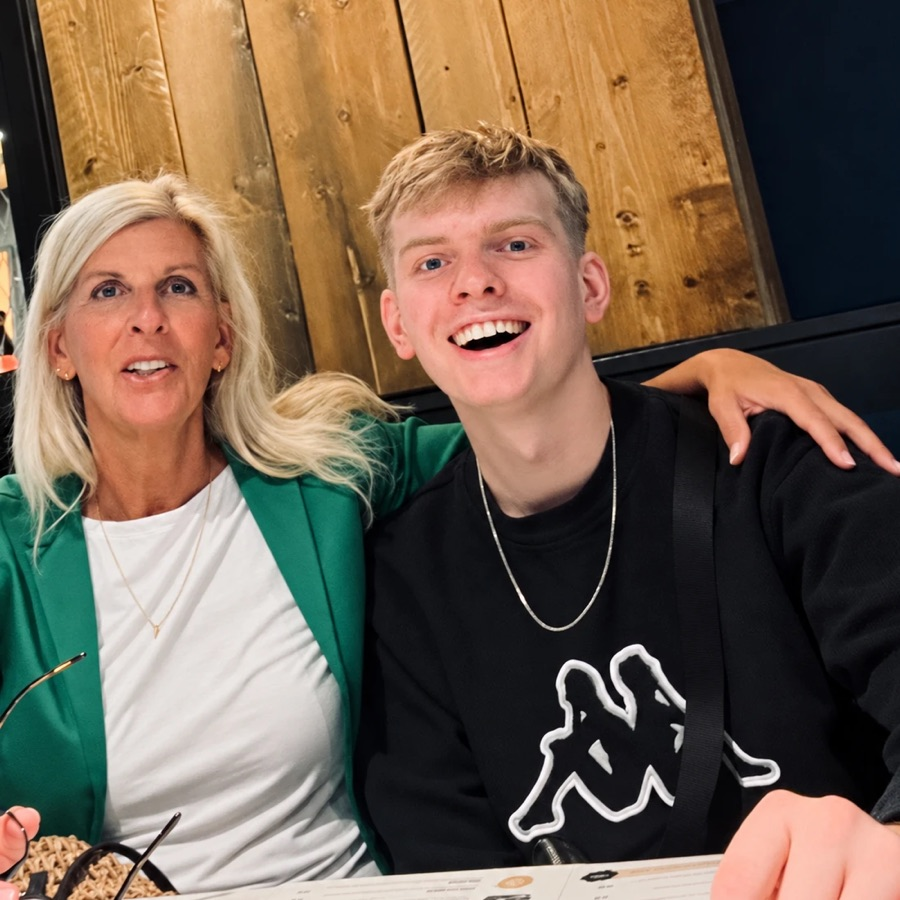

Hi, I'm Constantin.
I've been cooking since I was a kid — first just for myself, then for anyone who'd sit at the table. Cooking for other people is still my favorite part of it: watching someone try a bite and go back for seconds is the whole reason I started filming in the first place.
I'm 23, and I'm the kind of person who has to try everything at least once. New techniques, new cuisines, new ideas that probably shouldn't work — that curiosity is basically the engine behind this whole page. Consider yourself invited along for the ride.
The aprons in the shop are a bit more personal: my mom is a trained seamstress and designed them, and we picked the fabric together. Each one is cut and sewn by hand in Germany. It's become one of my favorite parts of this whole project.
This site exists because every other comment asks for the recipe. Here it is: ingredients up top, steps below, no half a life story in front of it.
Weekends are for dishes that take a bit more ambition and time. During the week I cook like everyone else: fast, with whatever is around, usually in one pan. You'll find both here, cleanly separated.
In brief
- Who: Constantin, 23, cooking since he was a kid and filming it as @constantinteck.
- What: Easy recipes from the videos on Instagram, TikTok and YouTube – ambitious dishes on the weekend, quick one-pan food during the week. Every recipe from the videos is written out on this site.
- Reach: 100M+ views, 50,000+ people cooking along.
- The aprons: designed by his mom, a trained seamstress, and cut and sewn by hand in Germany. Waffle piqué, for adults and kids.
- Contact: info@constantinteck.com
Where to find me
Work with me
For collaborations and enquiries: info@constantinteck.com